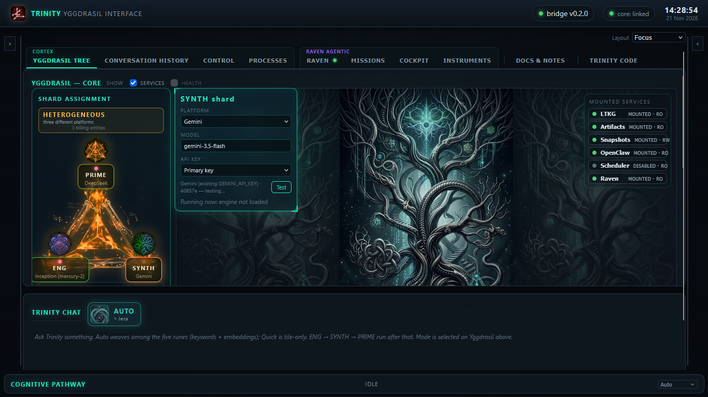
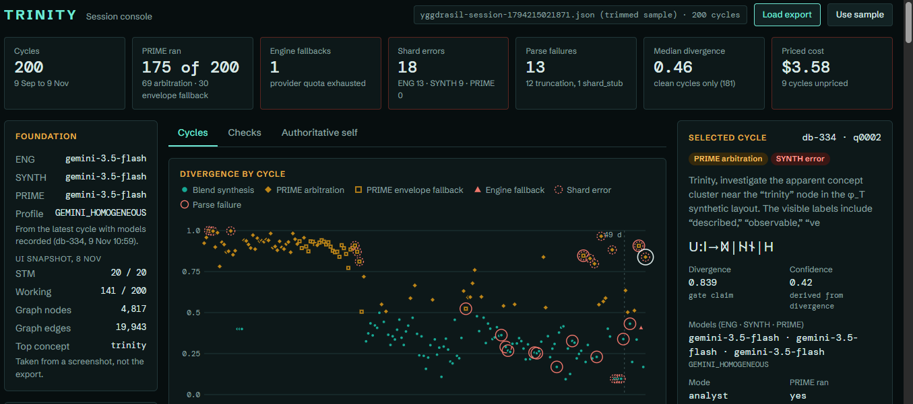
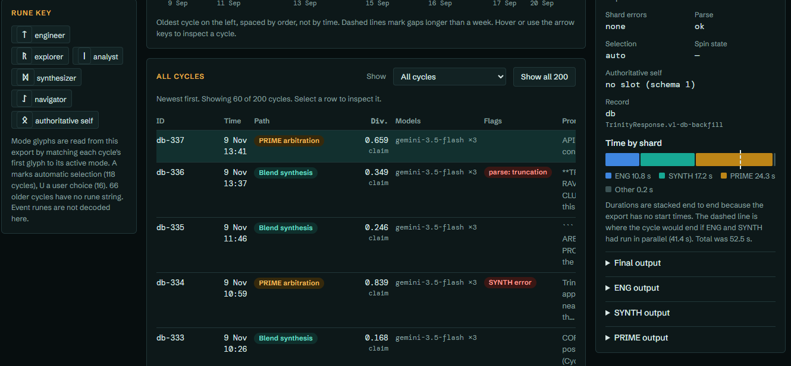
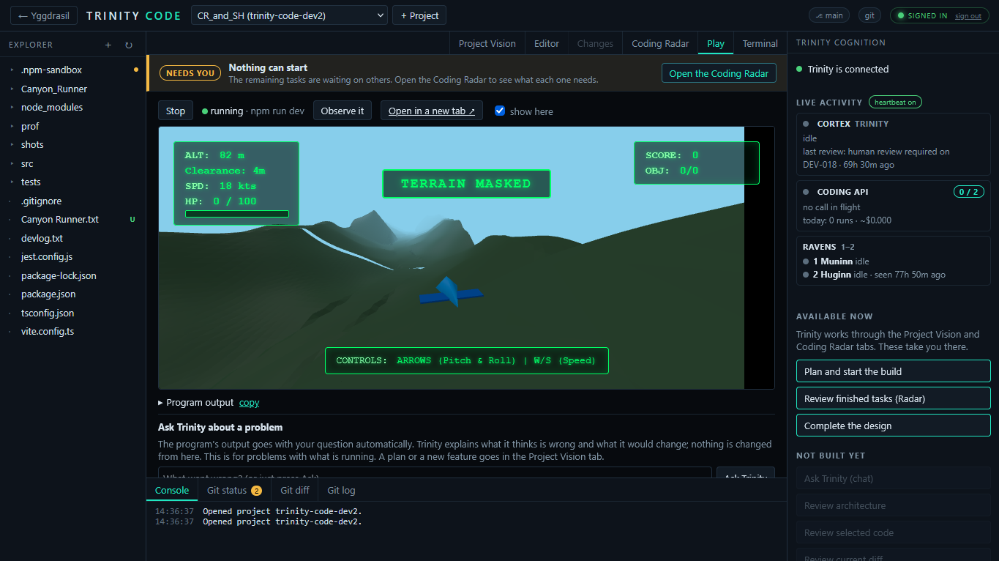

Yggdrasil Tree
Yggdrasil with the Shard API control panel: model and key selection beside the heterogeneous Cortex assignment. Captured application state.
Trinity brings reasoning, persistent knowledge and governed agent activity into one local workspace. Models supply inference; Trinity carries the memory, task state and policy across sessions.
Research preview. Captures are from the running system; this website is not connected to it.
Artificial Cognition Intelligence: a coded core of memory, relationships and authority, with replaceable models behind the boundary.
Illustrative nodes and links. Depth is a synthetic layout coordinate, not importance or measured telemetry.
THE ACi PRINCIPLE
ACi places persistent memory, task state, explicit relationships and authority in the coded architecture around interchangeable inference.
Two architectural emphases—not a claim that all AI products lack memory or governance. ACi is the design Trinity is building toward.
| Architectural question | Inference-driven baseline | Trinity ACi |
|---|---|---|
| Where does behaviour live? | Centred on probabilistic model weights and prompting. | Coded roles, explicit graph topology and state rules surround probabilistic inference. |
| What is the model’s role? | The primary reasoning authority for the application. | A swappable, policy-governed compute endpoint accessed through an adapter and credential. |
| What carries continuity? | Context windows and application-managed retrieval; persistence varies by product. | A persistent LTKG, working context and DreamCycle staging, with governed promotion and write-lock boundaries. |
| What constrains action? | May rely heavily on prompt-level guardrails; external controls vary. | Target: architectural permission checks, staging, approval and explicit state transitions. A model cannot authorize itself. |
| How is origin exposed? | Provider metadata and application logging, where supplied. | Target: explicit Trinity Cognition / Bridge / Mock tiers and an Ed25519 commit envelope. Bridge and Mock display Unsealed Cognition. Public key pending. |
| What survives a provider change? | Depends on the application’s persistence and migration design. | System-owned identity, memory, topology and policy are designed to remain; capabilities and adapter behaviour must be retested. |
INSIDE A TRINITY CYCLE
Trinity separates analysis, exploration and review so you can inspect how a response takes shape.
The request enters with its available context and configured boundaries.
ENG examines evidence and constraints. SYNTH explores connections and alternatives. Their outputs expose agreement and divergence.
The configured review path assesses the result. PRIME arbitrates when invoked; the final response follows that review.
Candidate knowledge can be staged for the LTKG. Staging remains separate from authorized promotion into persistent memory.
See the reasoning record. Open the captured Cycle Inspection view to examine the interface used to inspect a cycle.
Open Cycle Inspection →View Conversation HistoryCAPTURED INTERFACES
One workspace, five ways to explore it. Choose a view, inspect the capture, then go deeper when you need to.
Select a capture to inspect it. Use Enlarge capture for full size; the complete library includes every recorded view.

Yggdrasil with the Shard API control panel: model and key selection beside the heterogeneous Cortex assignment. Captured application state.

Conversation history with mode filters, timestamps and reasoning-path labels. Captured application state.

Session Analytics: a recorded 200-cycle sample with error, fallback and priced-cost visibility. Unpriced cycles are excluded from cost totals.

Cycle details, shard timing and ENG / SYNTH / PRIME outputs. Captured application state.

Connected concepts, selected-node metrics and Observatory tools. Captured graph state.

Task ownership, blockers, evidence and review in the mission cockpit. Captured application state.

Canyon Runner running inside Trinity Code. Captured application state; the first-test caveats are in the case study below.
REASON
ENG analyzes. SYNTH explores. PRIME arbitrates when the reasoning path calls for it.
Evaluate evidence and constraints.
Explore connections and possibilities.
Review differences and arbitrate.
MEMORY
Recent conversation, active working context and a persistent LTKG support continuity across sessions. Concepts remain linked to evidence and provenance.
DreamCycle reviews accumulated material. Candidate knowledge passes through staging and governed promotion; ordinary task activity does not automatically become permanent truth.
RAVEN RADAR / HUGINN / MUNINN
Radar gives each mission a persistent identity, owner, plan, dependency state and evidence trail. Blockers and protected decisions remain visible.
Ravens act within their defined roles and may consult Cortex. Reorganize with Trinity applies cognition to the task list: re-rank work, consolidate overlap and allocate the next steps.
Tasks may require Cortex consultation, allow it as needed or forbid it. Execution uses configured capabilities; a consultation does not grant new write authority. Work advances through evidence and the required review.
Full Raven Radar workflowPOLICY / PROVENANCE / TRUST
Scoped requests, policy checks, evidence and review separate a proposed action from an authorized commit.
Oracle Policy and WARDEN govern the boundaries. Trinity Cognition, Bridge and Mock serving tiers remain explicit. Ed25519 signing integration and production public-key publication are pending.
DEVELOPMENT PATH
The user defines scope, authorizes the plan and steers architectural decisions. Cortex alone issues coding-agent build orders; Ravens research on its request.
FIRST CODING TEST / CANYON RUNNER
In my first Canyon Runner coding test, Trinity produced the basic engine, flight model, terrain, basic UI and collision physics in one coding task loop. The foundation ran on its first execution. Only Cortex issued coding orders to the Gemini 3.5 Flash inference endpoint.
The user works as the software architect and project manager: set the scope, authorize the plan and architectural decisions, then monitor and steer development. Cortex prepares the build plan; the Coding UI exposes progress, dependencies, blockers and the decision-and-evidence record.
Inspect the plan · Explore dependencies · View the task board
A practical example of a modest inference endpoint operating inside Trinity’s planning, task and governance architecture. The result supports investigating how Cortex can extend the usefulness of lower-cost inference; it does not by itself quantify a performance gain over the same model without Cortex.
The one-loop, first-execution result and Gemini model attribution describe my first test. The screenshots show a later build state with additional completed and debug tasks, and a configured Anthropic / Claude coder. They illustrate the workflow, not independent verification of the original Gemini run. This is a working foundation, not a claim that the entire game was finished in one loop.
Run A: full Cortex, Coding Radar and Raven workflow. Run B: comparable coding models and tools without Cortex-driven planning and task reconciliation. Run C: the full workflow with controlled interruptions, failed tests and recovery.
Use matched starting revisions, task specifications and resource budgets, with repeated trials and independent checks. Measure clean-install functionality, build success, test results, human interventions, elapsed time, inference cost, recovery and correctly closed tasks.
Milestone A: working packaging. Milestone B: autonomous completion within the authorized mission, with all interventions recorded. Milestone C: repeatable, independently verified results under failure injection. These are proposed success criteria; no benchmark outcome is claimed.
Next: Trinity Forge. Develop an experimental Trinity clone inside an isolated VM while the original Cortex directs the work. Packaging, onboarding, account setup and security configuration form the proposed Forge Test.
RESEARCH / ORIGINS
JAMES SAPSFORD
Trinity Engine is a solo project by James Sapsford. I don’t write code. I design the architecture, set its rules and direct the build, while AI systems write the implementation. “Vibe coding” would undersell it. Trinity has been developed recursively: its own reasoning roles have reviewed and shaped successive versions of the architecture, under my direction. The work is documented in the white paper and visible in the captures on this site.
Inspect the evidence: Session Analytics — error/fallback figures [PLACEHOLDER]; Canyon Runner — foundation running on first execution in my first test. These records, rather than the development method alone, are the basis for assessing reliability.
Request early access announcements for Trinity Engine.
Opens an email draft to v12trinityengine@gmail.com. Send it from your mail app to request early access announcements.